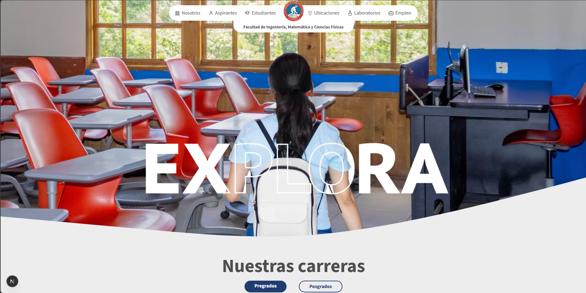

Docente
Universidad Mariano Gálvez de Guatemala
Julio 2026 - Actualidad
Impartiendo el curso de Desarrollo Web para la Facultad de Ingeniería, Matemática y Ciencias Físicas.
+5 años de experiencia, Ingeniero en Sistemas y Catedrático en la Universidad Mariano Gálvez de Guatemala. Especializado en el desarrollo de aplicaciones web únicas.
Universidad Mariano Gálvez de Guatemala
Julio 2026 - Actualidad
Impartiendo el curso de Desarrollo Web para la Facultad de Ingeniería, Matemática y Ciencias Físicas.
Instituto de Investigación de Ingeniería Matemática y Ciencias Físicas
Enero 2025 - Actualidad
Lidero en la planificación, diseño y desarrollo de múltiples sistemas web para la automatización de procesos académicos e institucionales.
ITS Infocom
2024
Soporte de primer nivel mediante la gestión y seguimiento de tickets de incidencias para clientes empresariales.
Instituto de Investigación de Ingeniería Matemática y Ciencias Físicas
Junio 2024 - Mayo 2025
Desarrollo de una aplicación móvil para la visualización de información sismológica en tiempo real e histórica.

Rediseño del sitio web, mejorando el rendimiento, incremento de trafico de usuarios.
Rediseño del sitio web, mejorando el rendimiento, incremento de trafico de usuarios.